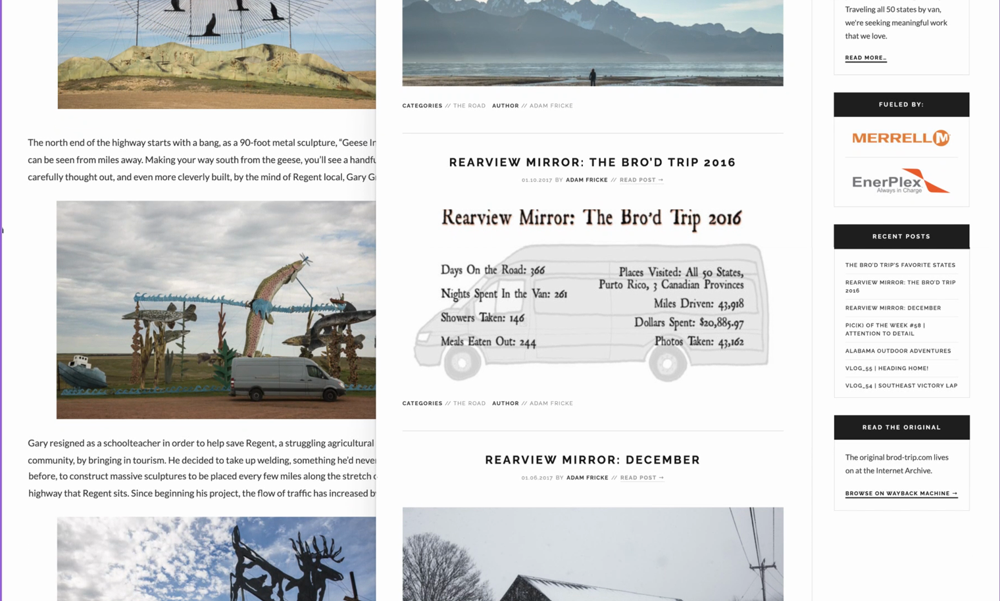
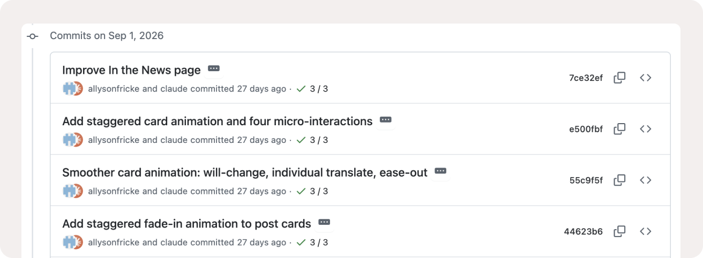
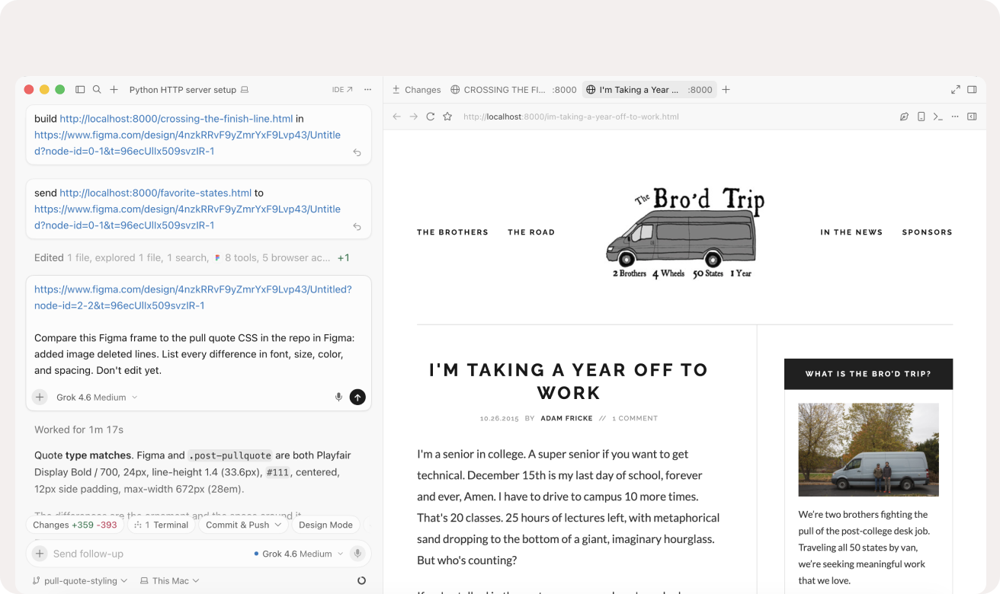
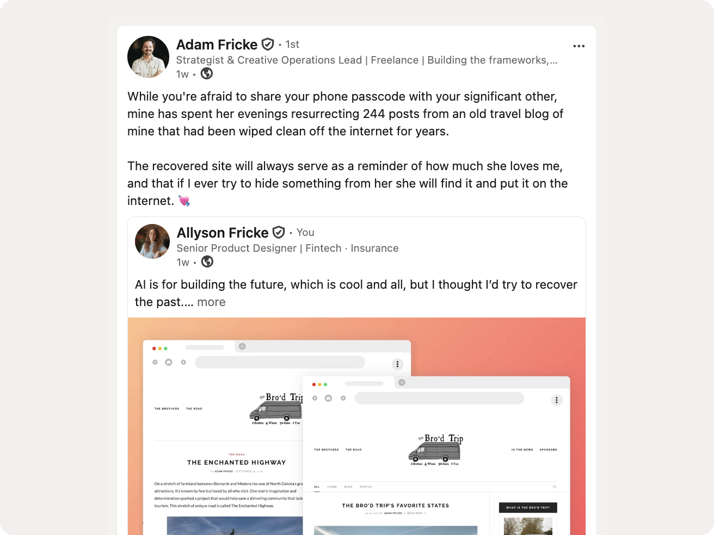

Reviving a Lost Archive with AI
Rebuilding a trip blog after the original posts were lost, using Claude Code, Cursor, and Figma.

The Situation
A decade ago, my husband spent a year driving a van through all 50 states, documenting the whole trip one post at a time. Somewhere along the way, the WordPress site holding all of it went dark. No export file, no local drafts, no backup. Two hundred and forty-four posts gone, along with the record of one of the most significant years of his life.
What Survived
The only thing left was whatever the Wayback Machine had managed to crawl before the site disappeared. The crawl was partial and uneven: some posts came back clean, others were missing images or broken outright, and different crawl dates sometimes returned different versions of the same post. Before any rebuilding could start, I needed to know what we actually had and what to do about what was gone.
Two Attempts
The first attempt was straightforward: rebuild it exactly how it was, hosted on WordPress, one post at a time. Fifteen posts in, it was clear that pace wasn't going to get through 244 posts. I ran out of steam.
The second attempt started with Claude Code as the core tool instead of the whole process. Feed it a Wayback Machine URL, and it crawls the archived post, pulls the content, and returns a clean static HTML file. Running at roughly $20 a month in Claude usage, that approach got through the bulk of the archive, rate limits and all, until Anthropic restricted outbound fetching to the Wayback Machine mid-project.
Fifteen posts had been enough to stop me once. It wasn't happening twice.
The full rebuild, including a cleanup pass across all 248 files (the 244 posts plus the about and sponsors pages), wrapped up the project.
Where an image couldn't be recovered, the page shows a placeholder with the original filename and whatever caption survived.
The Commit History
Claude Code did more than fetch pages. It restructured templates, rewrote the fetch pipeline when the restriction hit, and ran the cleanup pass across all 248 files. Some of the later updates went through VS Code directly, Claude open next to the code, each change reviewed before it got pushed.

The project's commit history, with changes co-authored with Claude
New Tools, Same Site
This case study started a while back. I've kept updating the site since then, most recently in Cursor: small styling details that Claude and Cursor don't quite get right the first time. Each one gets its own branch, merged through a pull request.
For one of those, I pulled the site into Figma with the Figma MCP, adjusted the pull quote there, then had Cursor compare the Figma frame to the CSS and update only what changed. I reviewed every diff before merging.

Cursor comparing a Figma frame to the live pull-quote CSS
Where This Leaves It
My husband got his road trip back, and I got an excuse to build a website for fun.

The recovered blog, shared on LinkedIn